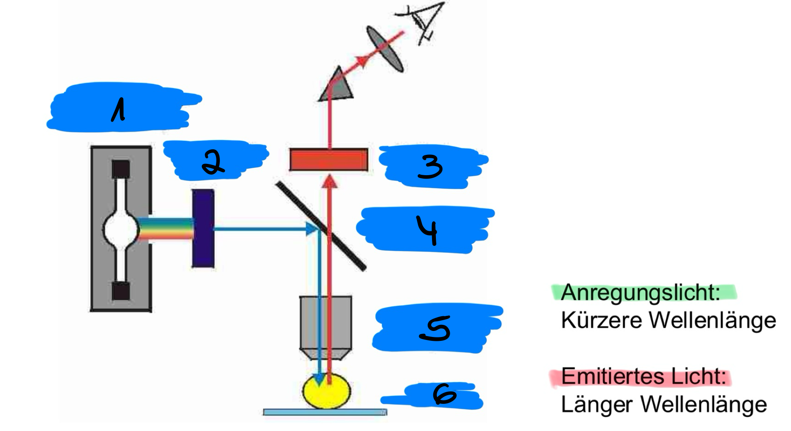
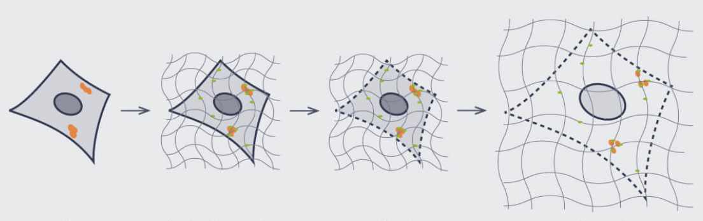
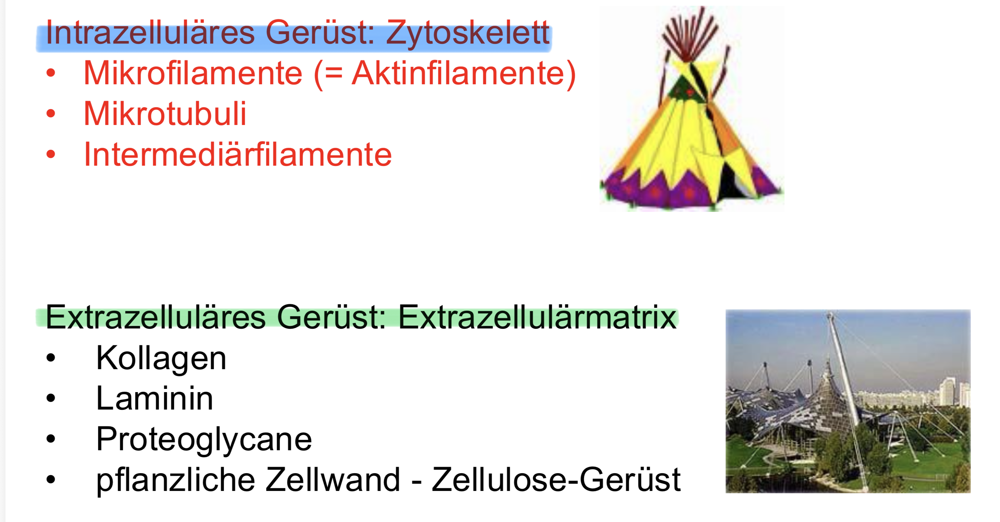
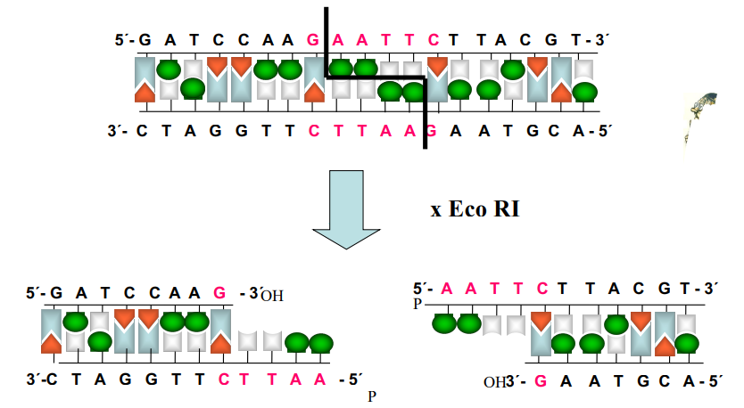
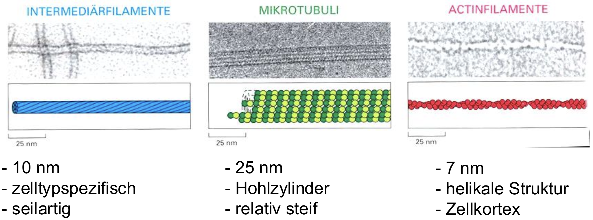
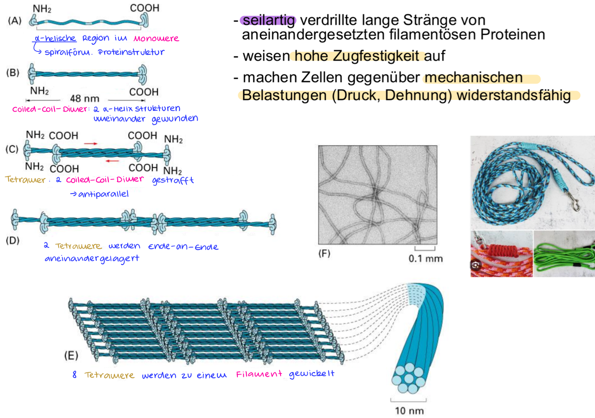

Einstein war ein theoretischer Physiker und Nobelpreisträger.
Eukaryoten
Prokaryoten
len(Okazaki Fragment)
100 bis 200 Nt
1000 bis 2000 Nt
len(Primer)
8 bis 11 Nt
11 bis 12 Nt
Replikationsgeschwindigkeit
2500 Nt/min.
50.000 Nt/min.
Anzahl pro Replikon
25.000(Maus)
1
len(Replikons)
150 kb(Maus)
4.700 (E.Coli.)
DNA POL bei Eukaryoten
Eukaryotische Replikationsgabel
Helikase = Reißverschluss öffner
RPA
(Replication Protein A) = d. sind d. einzelstrangbindenden Proteine (ssb-Protein (Single-Strand Binding Protein)), d. d. Replikationsgabel aufhalten
Also ist TERRA wie der Manometer bei der Heizung. TERRA wird immer prod., wenn Telomerase aktiv ist. TERRA wird v. einem RNA-Polymerase synthetisiert. Wenn Telomer so kurz ist, dass sich dann auch TERRA verändert, weiß d. Zelle, dass d. Zeit gekommen ist zu sterben.
Also, d. Problem ist eigentlich nur, dass d. codierende Seq. im Folgestrang $\lnot$ synthetisiert werden kann, weil d. Primase keinen Platz hat eine neuen Primer zu setzten, d. dann d. DNA-Polymerase ermöglicht, den letzten codierenden Rest zu transkribieren. D. Telomerase fügt hierfür d. Telomer im Leitstrang hinzu, damit d. Primase mehr Platz hat, um einen Primer hinter d. codierenden Seq. zu setzten und den codierenden Teil zu synthetisieren.
Das Problem ist nur, dass d. Telomerase bei Somazellen n. d. Geburt abgeschaltet wird & d. Zeit ab diesem Zeitpunkt anfängt zu schlagen, welches man als Countdown sehen kann, d. bis zum endgültigen Zelltot runterzählt. D. Telomere werden quazi bei jeder Zellteilung kürzer, weil keine Telomerasen vorhanden sind, d. d. fehlenden Lücken beheben kann. Grund für Alterung.
Merkmal
Keimzellen (Spermien/Eizellen)
Somazellen (Körperzellen)
Telomerase-Aktivität
Hochaktiv
Inaktiv (abgeschaltet nach der Geburt)
Telomer-Länge
Bleibt über Generationen identisch lang
Wird bei jeder Zellteilung kürzer
Konsequenz
"Unsterblichkeit": Informationen werden verlustfrei an Kinder weitergegeben
Begrenzte Lebensdauer: Zellen altern und gehen in Seneszenz
DNA-Amplifikation
Wie und warum kommt es zur gezielten DNA-Amplifikation in Eukaryoten?
Wie verhindert der "Wächter des Genoms" (p53) die Replikation von defekter DNA?
DNA-Schaden $\underrightarrow{\ \ \ \ \textcolor{#7abd2d}{\text{führt zur}}\ \ \ \ }$ Aktivierung von p53 $\underrightarrow{\ \ \ \ \textcolor{#7abd2d}{\text{aktives p35}}\ \ \ \ }$ bindet an Regulationsbereich des p21-Gens $\underrightarrow{\ \ \ \ \textcolor{#7abd2d}{\text{Zelle prod.}}\ \ \ \ }$ p21 (ein Cdk-Inhibitorprotein) $\underrightarrow{\ \ \ \ \textcolor{#7abd2d}{\text{p21 blockiert}}\ \ \ \ }$ den Cyclin-Cdk-Komplex der S-Phase $\underrightarrow{\ \ \ \ \textcolor{#7abd2d}{\text{Ergebnis}}\ \ \ \ }$ Eintritt in S-Phase wird verhindert
Kinasen aktiviert & Inhibitoren blockieren
Zusammenfassung.:
DNA-Amplifikation ist im Grunde die gezielte, massenhafte Kopierung eines DNA-Abschnitts.
Das ist wie eine
Polysom,
bei der DNA-Polymerasen den Zielabschnitt exponentiell vervielfältigen.

Gentechnologie
Was ist klassische Genetik ?
Herstellung neu rekombinierter DNA-Moleküle aus derselben Art oder unterschiedl. Arten.
$\forall$ Organismen = DNA $\underrightarrow{\ \ \ \ \textcolor{#7abd2d}{\text{Speicher}}\ \ \ \ }$ f. Erbinfo.
Klassisches Züchten
Mutter Pferd ($2n = 64$) + Vater Esel ($2n = 62$) = Maultier
Mutationen
Mensch:
~ $60$ Neumut. beim Baby
Weizen:
$\gt$ $100$ Neumut. bei Pflanze
Mut. Züchtung
Man erhöht künstl. d. Mut.rate durch radioaktive Strahlen $\implies$ ca. $1000 \times$
$\gt$ 3400 Sorten im Markt
DNA-Transfer/Neu/-Rekombination finden bereits auch in d. Natur statt
konventionelle Züchtung:
Individuen mit gewünschten Eigenschaften (z. B. besonders große Früchte) miteinander gekreuzt $\underrightarrow{\ \ \ \ \textcolor{#7abd2d}{\text{Problem}}\ \ \ \ }$ Durch d. Kreuzung werden ungezielt Tausende unterschiedl. Gene neu kombiniert. Man weiß also nicht genau, welche Gene man am Ende erhält, und muss hoffen, dass d. beste Kombination dabei ist
Mutagenese:
d. künstl. Erhöhung d. Mutationsrate durch Radiation, um neue eigenschaften zu erzeugen

Restriktionsenzyme

Was machen Restriktionsnukleasen ?
schneiden eindringende fremde DNA in Bakterien
Methylierung dient auch hier als Schutz oder Stempel
Wie schneiden Restriktionnukleasen d. DNA ?
sequenzspezifisch
$GAATTC$ = palindromisch
hier sind es sticky ends
es gibt auch glatte Enden = blunt ends

Wann sind 2 Restiktionsenzyme kompartible ?
wenn sie id. ü.hänge hinterlassen
Was genau bedeutet hier palindromisch ?
Seq. auf Leitstrang muss id. auf dem Folgestrang sein $\underrightarrow{\ \ \ \ \textcolor{#7abd2d}{\text{gelesen}}\ \ \ \ }$ $5' \to 3'$
DNA-Ligase

Mehrere Mögl. d. Ligase:

Wie findet man d. jenige Bakterien, d. rekombinante Moleküle aufgebnommen haben ?:
Selektion:
Resistenzgen wird auf alle Bakterien gestrichen $\implies$ nur Bakterien, d. Plasmid aufgenoommen haben ü.leben
Screening:
Reportergene ($lacZ$)
Blau-Weiß-Screening:
Gen f. Enzym $\beta-Galaktosidase$ ($lacZ$) liegt genau an d. Stelle, wo man den Gen einf. möchte
wenn blau $\implies$ $lacZ$ intakt $\underrightarrow{\ \ \ \ \textcolor{#7abd2d}{\text{sapltet Farbstoff}}\ \ \ \ }$ Kolonie wird blau
wenn weiß $\implies$ wunschgen erfolgr. eingebaut, weil lacZ-Gen unterbrochen $\underrightarrow{\ \ \ \ \textcolor{#7abd2d}{\text{Kein Enzym, um Farbstoff zu spalten}}\ \ \ \ }$ Kolonie bleibt weiß
Fluoreszenz (GFP):
Ein anderer Reporter = Grün-fluoreszierende Protein"
restriktive Temp $\to$ $cdc13$ defekt $\to$ Enden sind nackt $\to$ Zelle denkt, es ist ein DNA-Schaden $\to$ DNA damage checkpoint aktiviert $\implies$ Zellzyklus haltet bei G2-Phase an
Was bedeutet cdc13-1?
D. ist quazi d. Seriennummer d. Mut. & ist nicht spezifisch
Wie ist d. Paarungsweg v. Bierhefe ?:
mating pathway
können sich diploid($2n$) oder haploid($1n$) vermehren
$$
\text{2 mating types} =
\begin{cases}
MATa\
MAT \alpha
\end{cases}
= \text{MATa/MAT}\alpha
$$